FAQ für den Liquidity School Pro Indikator:
Q: Was ist der Indikator und wofür ist er gut?
A: Der Indikator erleichtert dir dein Trading, indem er gewisse Price Action Konzepte verwendet, diese nach deinen Vorlieben einzeichnet und dir massiv Zeit spart, weil er dir Alarme bei einem validen Setup zukommen lässt!
Als Basis solltest du Lukas seine Videos zum HXHY und das Video zum Indikator angesehen haben.
Freischaltung:
Q: Ich habe den Indikator bezahlt, jedoch warte ich schon mehrere Tage auf meine Freischaltung:
A: Du musst unbedingt deinen TradingView Namen im Portal angeben! Nur dann wird es im System als vollständig erkannt und Ich kann die Freischaltung vornehmen.
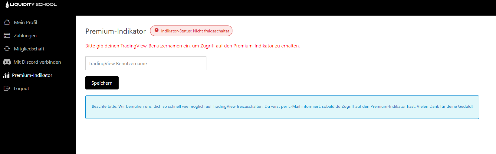
Alarme:
Q: Ich bekomme keinen Alarm, was ist passiert? Muss mein Chart aktiv sein damit der Alarm ausgelöst wird?
A: Den Alarm wählst du so aus, dass du immer im Entry Timeframe bist. Also beim H12H1 gehst du in TradingView in den H1 Timeframe und stellst dort den Alarm wie auf der Abbildung.
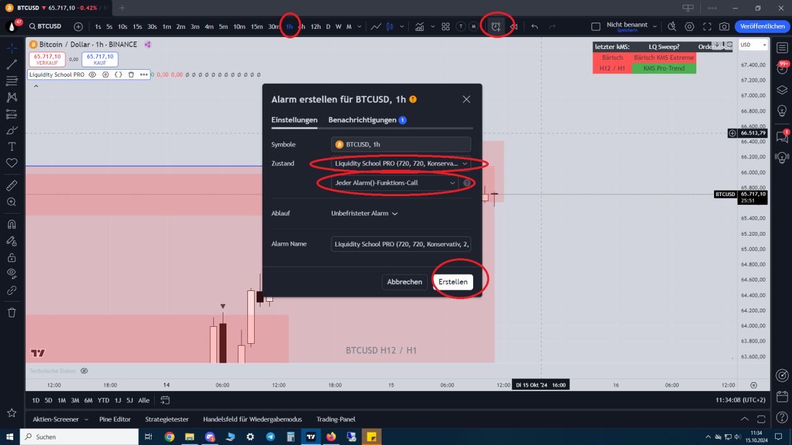
Die Alarme passieren immer gleichzeitig mit den ausgewählten Setups. Also sobald sich zb. das H12H1 nach deinen Einstellungen bildet, wird damit auch der Alarm dazu gesendet. Ihr könnt beim Alarm erstellen bei „Benachrichtigungen“ „in der App benachrichtigen“ auswählen, dann bekommt ihr das Signal immer direkt auf eure TradingView App aufs Handy!
Der Alarm läuft in der Cloud. Das bedeutet, nachdem du den Alarm gestellt hast, werden mit genau diesen Einstellungen und Timeframe die Alarme generiert. Somit kann dann der Chart geschlossen oder verändert werden, und du auch den PC ausschalten, ohne dass es Auswirkung auf den Alarm hat. Wichtig ist zu wissen, wenn du Änderungen vornehmen willst, auch wenn es ein Update von mir ist, musst du den Alarm jedes Mal löschen und neu stellen!
Trade:
Q: Wieso wird der Trade nicht eingezeichnet, obwohl ich hier ein valides Setup habe?!?
A: Hast du das auch sicher? Wenn das CRV bereits vor dem Entry erreicht wird, dann wird die Order gelöscht! Du erkennst das auch daran, dass die MSB Zone (oder je nach Auswahl) nicht mehr weiter gezeichnet wird! Wenn du das CRV erhöhst wird der Trade wieder getriggert, wenn dadurch der TP NICHT vor dem Entry erreicht wird. Bedenke, dass die Entry Art (zb. 50% MSB Zone) ebenfalls deinen TP verändert! Hier ist ein CRV von 3 eingestellt, der Trade ist valide, denn der TP wurde noch nicht erreicht:
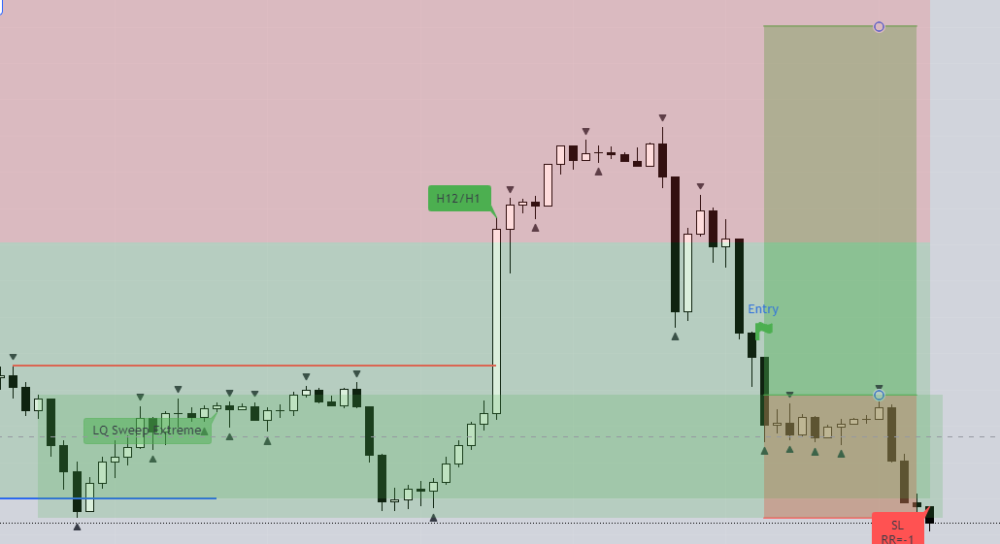
Wenn das CRV auf 1,5 eingestellt wird, kommt nichts da das Target bereits vor dem Entry erreicht wurde! Man sieht hier auch wie die MSB Zone nicht mehr weitergezeichnet wird!
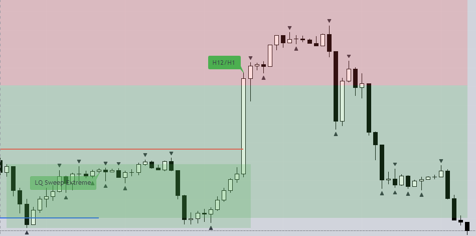
Q: Ich will einen Alarm für H12H1 und einen für H1M5. Wie geht das?
A: Dazu gleich mehr! Aber du musst wissen, dass du für jedes Setup einen Extra Alarm stellen musst, wenn die Einstellungen nicht kompatibel sind. Zb. hast du hier 2 verschiedene Entry Timeframes, daher musst du 2 verschieden Alarme stellen. Wenn du aber zb. H12H1 und H1H1 willst, brauchst du nur den H1 Timeframe, beide sind kompatibel und du kannst einen Alarm stellen der beide Setups abdeckt.
Solltest du mit dem Übergeordneten Timeframe arbeiten, so solltest du dafür auch einen separaten Alarm stellen, auch wenn du theoretisch M5M5 Setups und H1M5 Setups in Bezug zur H12 machen könntest.
Setups:
Der Indikator funktioniert folgendermaßen:
Zuerst wird der HTF eingestellt, auf diesen beziehen sich Struktur, Orderblocks und Liquidity Sweeps. Diese Sweeps kann ich einstellen, ob sie zb. im Premium/Discount sein müssen oder zb. keine Counter Sweeps valid sind.
Es wird dabei unterschieden zwischen HXHY Setups, wo der HX-Sweep und HY-Bruch in verschiedenen Timeframes oder im selben Timeframe stattfindet.
Die HXHY Setups in verschiedenen Timeframes (wie zb. H12H1) richten sich komplett nach den Einstellungen der LQ Sweeps. Also da wo ein Sweep als valid gesehen wird, wird danach auf einen LTF MSB gewartet damit das Setup valid ist! Damit diese Art von Setups angezeigt werden, müssen sie aktiv sein:
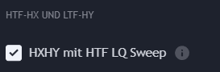
Für das HXHY im selben Timeframe wie das H1H1 gibt es weiter unten die Einstellungen dazu. Wenn Trend, Sweeps und Orderblocks miteinbezogen werden sollen, so werden die vom HTF genommen.
Q: Ich will das H12H1 Setup. Was stelle ich ein?
A: Das wollen die meisten, daher ist per default schon so festgelegt! Du stellst den Indikator auf die Standarteinstellungen zurück, und schon bist du fertig! Nach deinen Präferenzen kannst du noch den Counter deaktivieren, oder noch weitere Sweeps hinzunehmen!
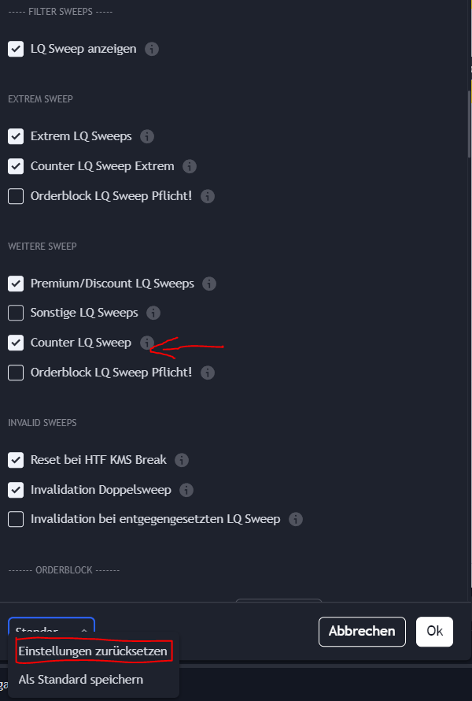
Q: Wie sind die Einstellungen für Das A++ Setup und weitere?
A: Was ist für dich ein A++ Setup? Du kannst nach deinen Präferenzen die LQ Sweeps auswählen! Du willst nur Extreme Sweeps in Trendrichtung handeln, dann setzte die Häkchen entsprechend! Bei jeder Auswahl befindet sich ein „i“. Klicke dort drauf und du erhältst detaillierte Infos!
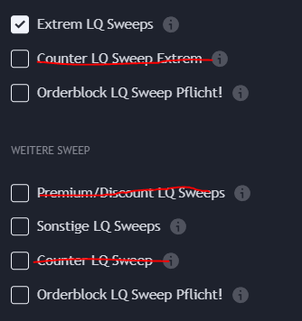
Wenn du zb. Beim Extrem Sweep Counter und Pro Trend handeln willst, und im Premium/Discount nur Pro Trend wenn dabei zusätzlich der Orderblock berührt wurde, sieht die Einstellung so aus:
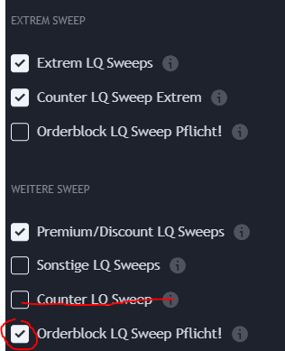
Q: Ich will das H1M5 Setup in der Premium/Discount verkaufen/kaufen. Zudem will ich aber nur Setups, wenn ich im bullischen Fall im Discount der H12 bin und im bärischen Fall im Premium der H12. Zudem soll der Discount Premium nicht bei 50%, sondern bei 40% liegen, damit die Setups tiefer entstehen.
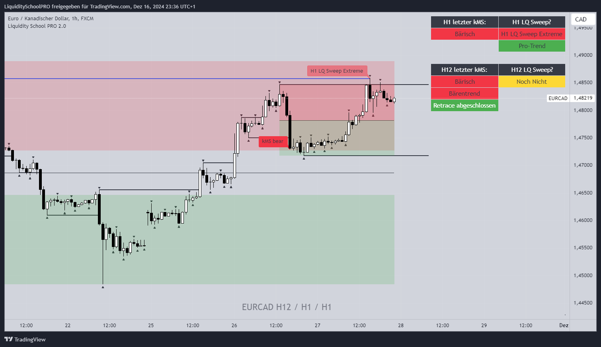
A:
• Einstellungen zurücksetzen
• Sonstige Sweeps einstellen falls gewünscht: Dann werden alle Sweeps im H1 beachtet! Ansonsten kann man die so auswählen, dass sie zb mit H1 Bezug in der Premium/Discount der H1 liegen müssen.
• HTF auf H1, da darauf die LQ Sweeps bezogen werden sollen.
• Bei Übergeordneten Timeframe muss H12 ausgewählt sein, und "Premium/Discount?" aktiv sein --> dadurch bekommen die H1M5 Setups den H12 Bezug!
• Premium/Discount % auf 40 stellen!
• Mach gerne auch die KMS Tabelle an für weitere Informationen zum H12!
• Wenn man zusätzlich noch gefiltert haben will, dass die Setups in die gleiche Trend Richtung wie der H12 geht, macht man den „Trend“ noch an! Dann werden longs nur valid sein, wenn die H12 KMS bullisch ist!
• Bei TradingView die Alarme im M5 einstellen! Das ist der Entry Timeframe, dort stellst du die Alarme!
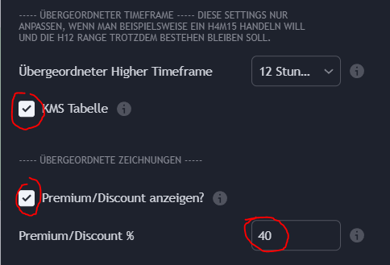
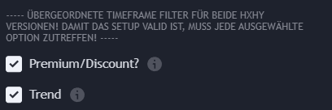
ZUSATZ:
Die Orderblöcke schaltest du aus wenn du sie nicht brauchts, das macht den Chart übersichtlicher!
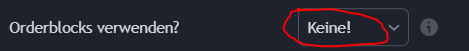
Willst du die H1 Sweep immer in Trendrichtung vom H1 handeln? Dann deaktiviere einfach die Counter!
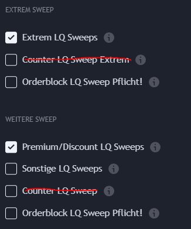
Q: Ich will H1H1 in Bezug zur H12. Ich will ALLE Setups im Discount der H12 kaufen, und im Premium verkaufen.
A: Für die Einstelllung der HXHY Setups im gleichen Timeframe wie H1H1 oder M15M15 wird der HTF und nicht den übergeordneten Timeframe als Referenz genommen! Mit dem Übergeordneten Timeframe können wir dann später noch weitere Filter verwenden!
Hier sind die zusätzlichen Filter des übergeordnetem Timeframes zu sehen:
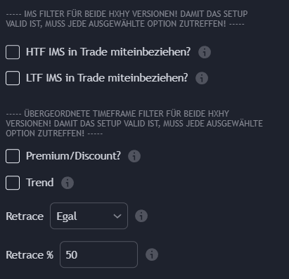
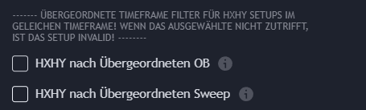
Q: Ok hab ich verstanden! Aber was, wenn ich jetzt nur H1H1 nach einem 12H LQ Sweep haben will?!?
A: Dann gehst du in die HXHY Einstellungen die denselben Timeframe betreffen und stellst dort alles entsprechend deinen Wünschen ein. WICHTIG: Wenn du die HXHY Setups im unterschiedlichen Timeframe (zb H12H1) nicht haben willst, dann stellst du das aus!
Alles nach diesen Part betrifft die HXHY Setups im gleichen Timeframe wie zb. H1H1! Und da stellst du einfach ein, dass du die HXHY nach HTF Sweep haben willst!
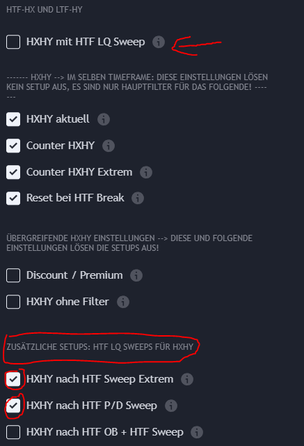
Q: Easy, dann will ich aber jetzt folgendes: Ich will ein M15M15, dieses im bullischen Fall nur im Discount der H1 und gleichzeitig im tiefen Disount (40 %) der H12 kaufen. Zudem muss die letzte KMS sowohl im H1 als auch im H12 bullisch sein! Zusätzlich muss der H12 der Orderblock berührt worden sein!
A: Ok dann erstmal den HTF einstellen, dieser wird für den Premium/Discount benötigt und die KMS Richtung
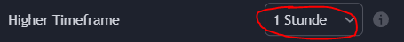
In dem Fall brauchen wir vom HTF jedoch keine Orderblocks und auch keine Sweeps, daher schalte ich sie aus:
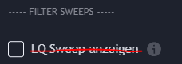
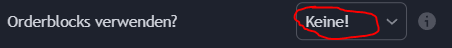
OK dann jetzt zum HXHY: Wir wollen im Discount kaufen, daher alle Setups im Discount Premium anzeigen lassen! Zudem wollen wir nur pro H1 KMS Setups, daher machen wir den Counter raus!
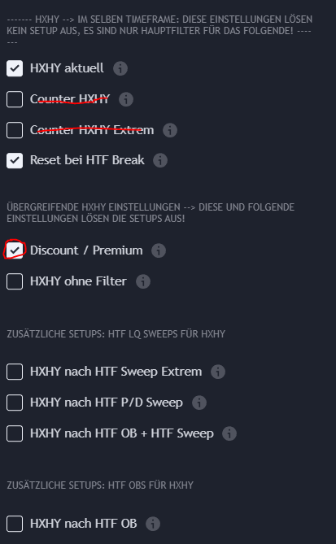
Und jetzt noch zum übergeordneten Tiemframe! Wir wollen nur im 40% Discount der H12 kaufen, und das auch nur in Trendrichtung der H12. Die Orderblocks müssen aktiv sein, und wir wollen, dass der H12 OB berührt worden sein muss für die Setups!
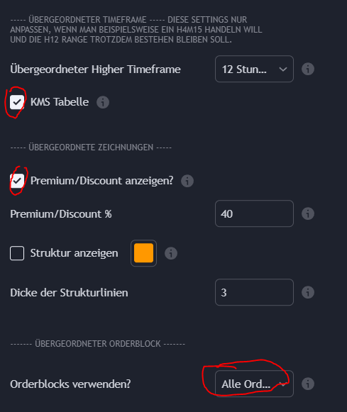
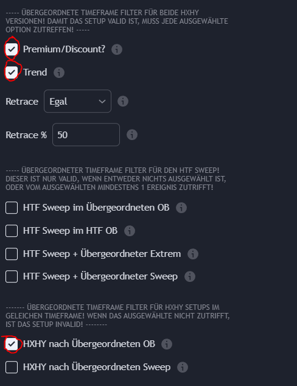
Q: Ich will H1M5 Setups, warum werden mir auch M5M5 Setups angezeigt?
A: In den Einstellungen hast du vermutlich ausgewählt, dass diese angezeigt werden sollen. Wenn du kein M5M5 willst, sollten in den Einstellungen keine Haken dazu sein, genau wie hier: Denn diese Einstellungen beziehen sich nur auf HXHY Setups die im selben Timeframe stattfinden!
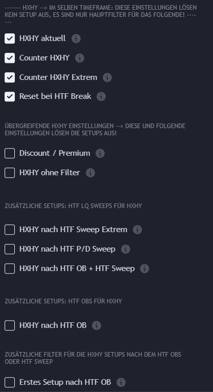
Q: Ich trade H1M5 bzw das M15M15, will aber dass meine Trades invalid sind wenn ein H12 Sweep gegen mich aktiv ist.
A: Da stellst du die Sweeps im übergeordneten Timeframe ein, welche für dich relevant sind. Wenn du alle haben willst, dann wähle zusätzlich „Sonstige LQ Sweeps“ aus. Die Sweeps müssen an sein und zusätzlich das Extra mit der Invalidation:
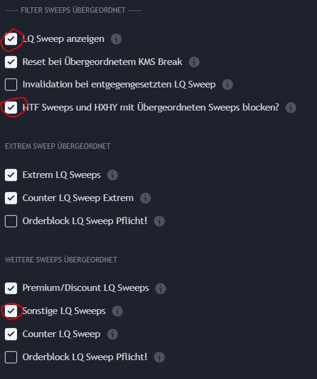
!!!Update!!! Neue Strategie!
Strategie 1, iMS.
Das wird oft vernachlässigt, gibt aber auch tolle Setups. Man kann in der neuen Version des Indikators nun die iMS als Filter nehmen. ZB kann man sagen, der Sweep oder das HXHY MUSS in Trendrichtung der iMS laufen. Das bedeutet, wenn die iMS bärisch ist, dann werden nur Sweeps oben als valide angesehen. Ein interessantes Konzept ist auch das H1M5 Setup damit zu selektieren:
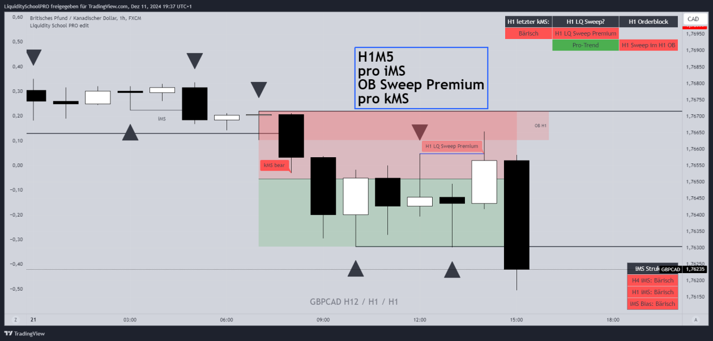
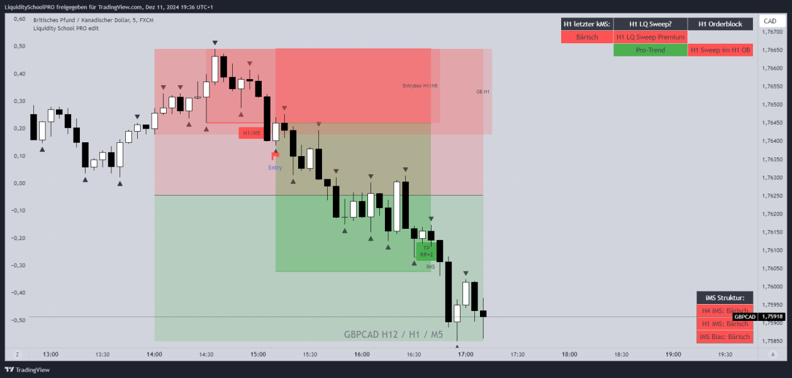
Wenn wir zb die H4 UND H1 iMS miteinbeziehen wollen, wählen wir folgendes aus:
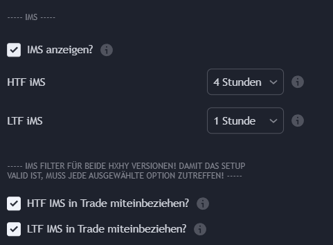
Und dann je nachdem welches Setup wir wollen. Wollen wir zb M15M15 dann wählen wir das wie oben beschrieben aus. Wollen wir zb H1M5 UNABHÄNGIG der KMS, dann:
• Struktur und Dealing Range wird entfernt
• HTF auf H1 stellen
• ALLE Sweeps anmachen → sonstige muss an sein, Counter auch
• Es muss verhindert werden, dass der Sweep beim Bruch gelöscht wird
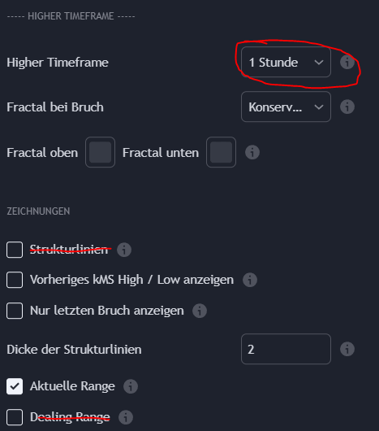
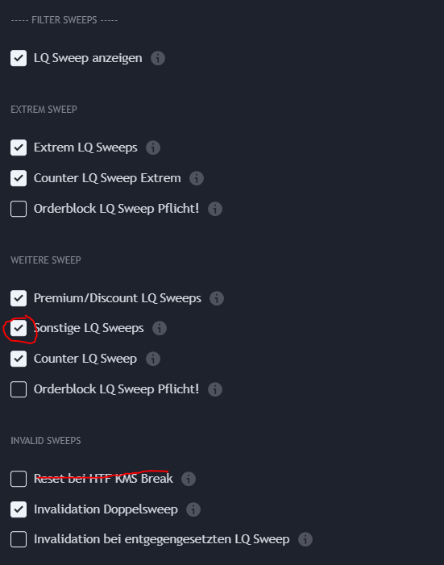
Sollte man zb. M15M15 unabhöngig der KMS haben wollen, so stellt man mit diesen Einstellungen das HXHY im unterschiedlichen Timeframe aus und das HXHY im selben Timeframe an.
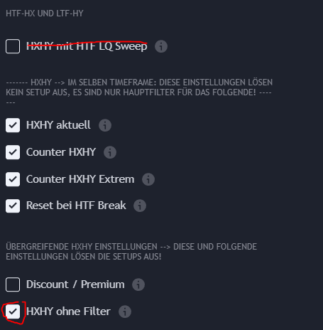
Wenn die KMS an sein soll wie oben in dem Beispielchart, dann muss man die einfach wieder anmachen. Im Beispiel wollen wir ja Premium Discount Sweeps im Orderblock oder Extem Sweeps. Den Reset machen wir auch wieder an, wir wollen in dem Fall das sich der LQ Sweep löscht, wenn die H1 Range gebrochen wird.
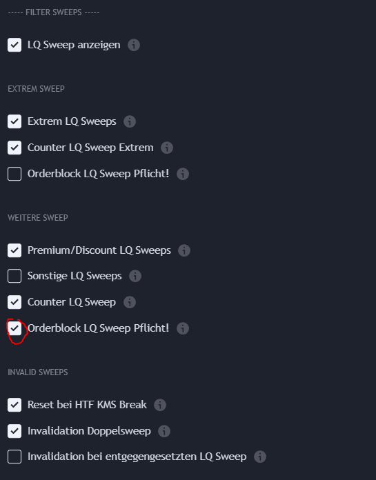
Strategie 2: H12/H4/M15
Das Konzept ist ein H4/M15 zu handeln, jedoch in Bezug zur H12.
Es gibt nun mehr Auswahlmöglichkeiten. Wir wollen hier ein H4M15, welches in der H12 Discount/Premium ist, und zudem ist der Sweep nur valide, wenn wir dabei in einem HTF (H4) Orderblock sweepen. Die Orderblocks wurden auf die H12 Dealing Range erweitert, sodass diese erst beim Bruch der H12 Range resettet werden.
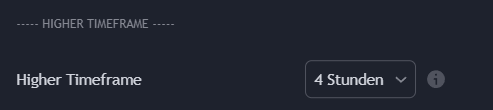
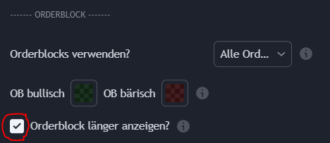
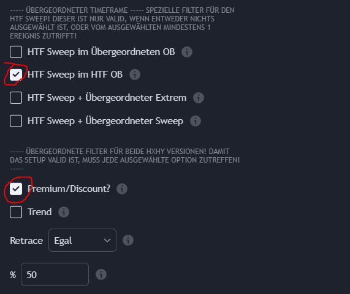
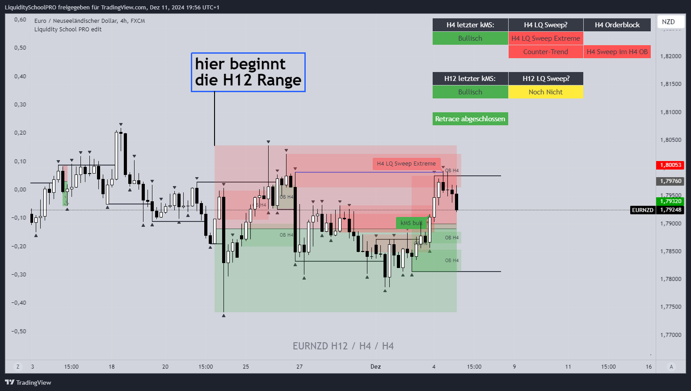
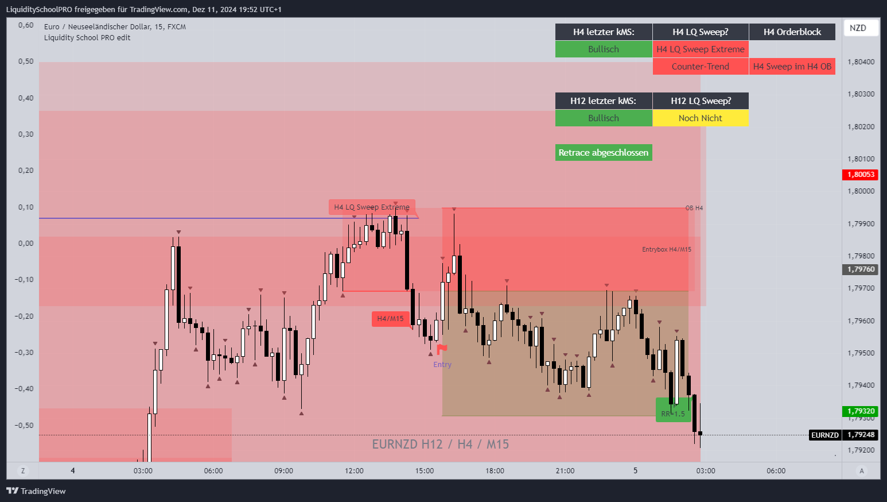
Ebenso können hier ausgewählt werden, dass ein HTF OB gesweept worden sein muss, ein HTF Extrem geholt wurde oder dass der Sweep erst dann im HTF valid ist, wenn ein Übergeordneter Sweep bereits DAVOR valid ist. Damit kann man sich schön was zusammenbauen.
Strategie 3: H12/H1/M5
Wir wollen H1M5 handeln, aber in Bezeug zum H12 Timeframe. Analog zum H12/H4/M15 können wir aber auch eine andere Startegie verwenden. „Der Markt ist Fraktal!“ Daher können wir auch den H12 als Bias nehmen. Wenn dieser gebrochen wird, so erwarten wir ein Retrace dass wir auch traden können. Wenn er retracet ist, erwarten wir eine Expansion, welche wir ebenfalls traden können. Da suchen wir unser H1M5 Setup! Als Bestätigung, dass er das Retrace anfängt, können wir auf einen H1 kMS warten:
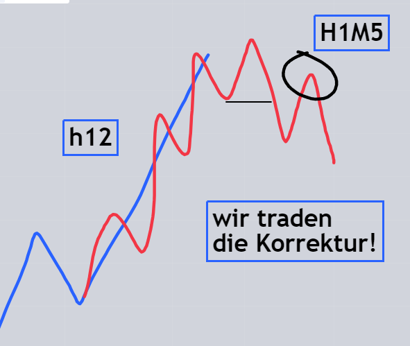
In diesem Bereich haben wir gute H1M5 Setups, man kann das noch kombinieren mit Premium/Discount oder einem Sweep im OB
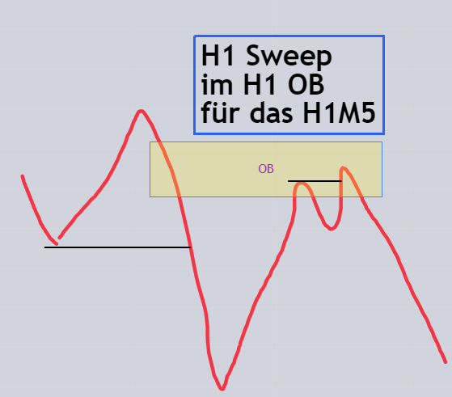
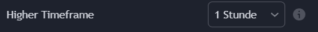
Wir wollen nur Pro KMS H1 Trend handeln, daher werden die Counter rausgenommen!
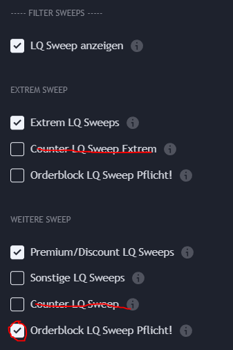
Wir wollen nur im Premium der H12 verkaufen, und das auch nur solange das Retrace noch nicht erreicht ist!
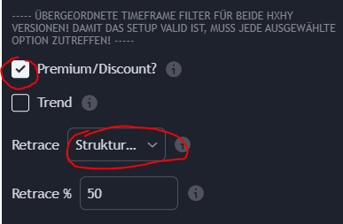
Genau dasselbe funktioniert auch mit nach dem Retrace:
Wenn wir hier ebenfalls nur Pro KMS H1 Handeln wollen, ändert sich nur das hier: Denn wir wollen nur noch im Discount der H12 Kaufen!
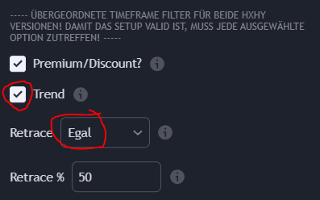
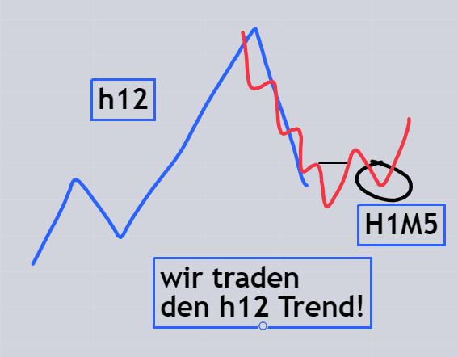
Wir haben nun extrem viele Filter zum spielen: Ich möchte euch diese Counter Beispiele kurz mit dem Indikator zeigen:
Nun ein Beispiel, probiert euch da aus und macht eure testings ;)
H12 hat einen bärischen Break gemacht, wir wollen das retrace handeln. Dabei soll ein bullischer H1 KMS entstehen! Wir wollen Sowohl im Discount der H12 als auch im Discount der H1 kaufen. Zudem wünsche ich mir für den H1, dass der Sweep im einem H1 OB stattgefunden hat!
Außerdem reicht mir im H12 nicht nur der Discount bei 50%, sondern er muss schon bei 40% sein, damit mir das Setup gefällt.
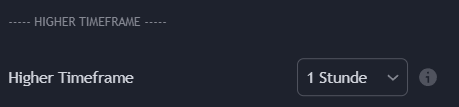
Ich will NUR pro KMS vom H1, daher mache ich den Counter aus! Und Ich will einen Sweep im OB, daher mache ich den an! Reset bei HTF break habe ich ausgemacht, damit man den H1M5 länger sieht, ansonsten wird der graphisch gelöscht.
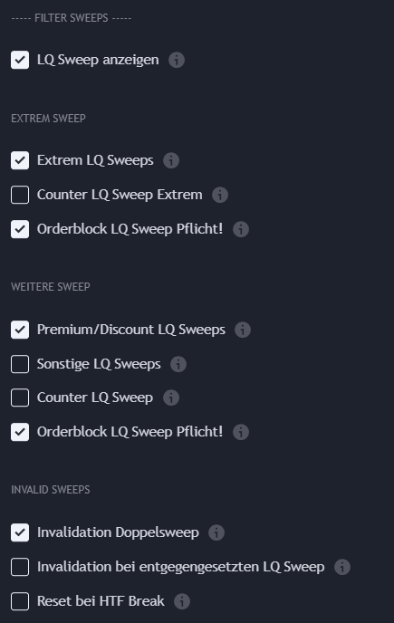
Wir wollen im Übergeordneten H12 höchstens bei 40% kaufen!
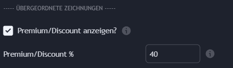
Wir wollen nur im Discount der H12 kaufen! Zudem wollen wir nur kaufen, solange das Retrace noch nicht erreicht ist! Diese Einstellung verhindert auch, dass wir im Discount nicht noch weiter verkaufen, wobei das ja aber auch gewünscht sein kann, dann einfach aus lassen!
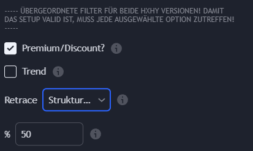
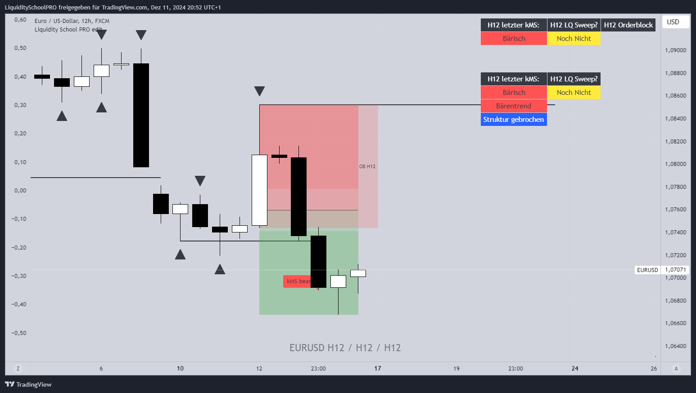
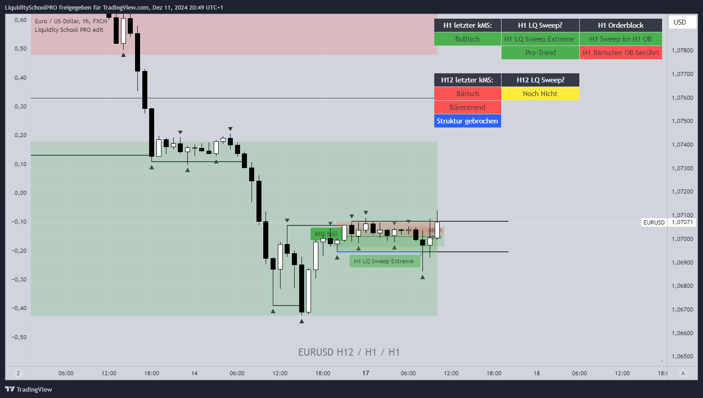
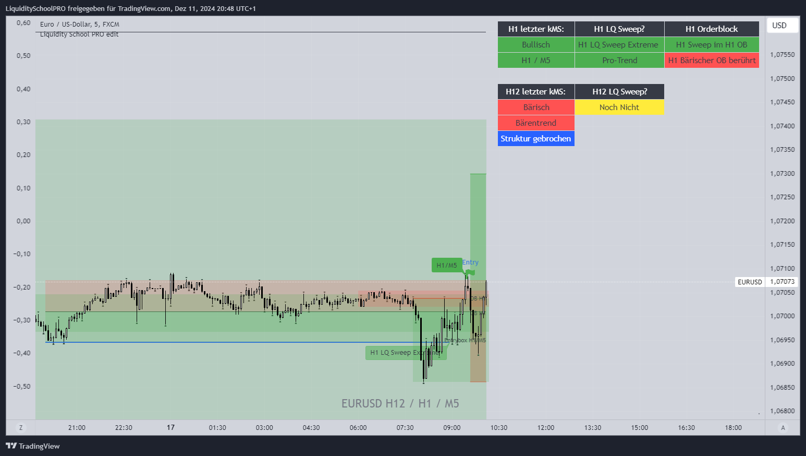
Weitere Optionen:
Wenn man 2 verschiedene Setups will, die sich aber nicht auf einmal einstellen lassen, dann nimmt man den Indikator einfach ein zweites Mal auf den Chart! Und stellt seine Alarme entsprechend der anderen Einstellungen!
Discord
Q: Ich möchte, dass die Signale in einen Discord Kanal wandern, wie geht das?
A: Zuerst einmal musst du in Discord einen eigenen Server eröffnen und einen Kanal darin erstellen, dafür gibt es viele Tutorials auf YouTube.
Zum Schluss fügst du die Webhook URL ein. Nicht vergessen „Discord“ in den Einstellungen des Indikators zu aktivieren!